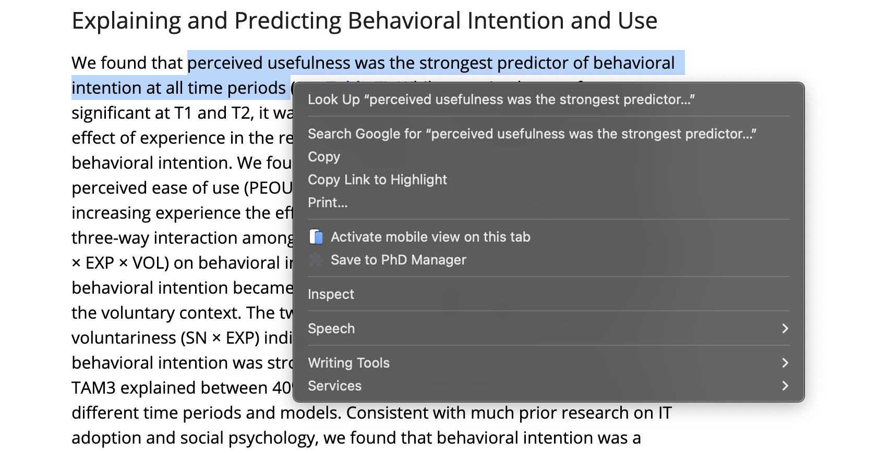
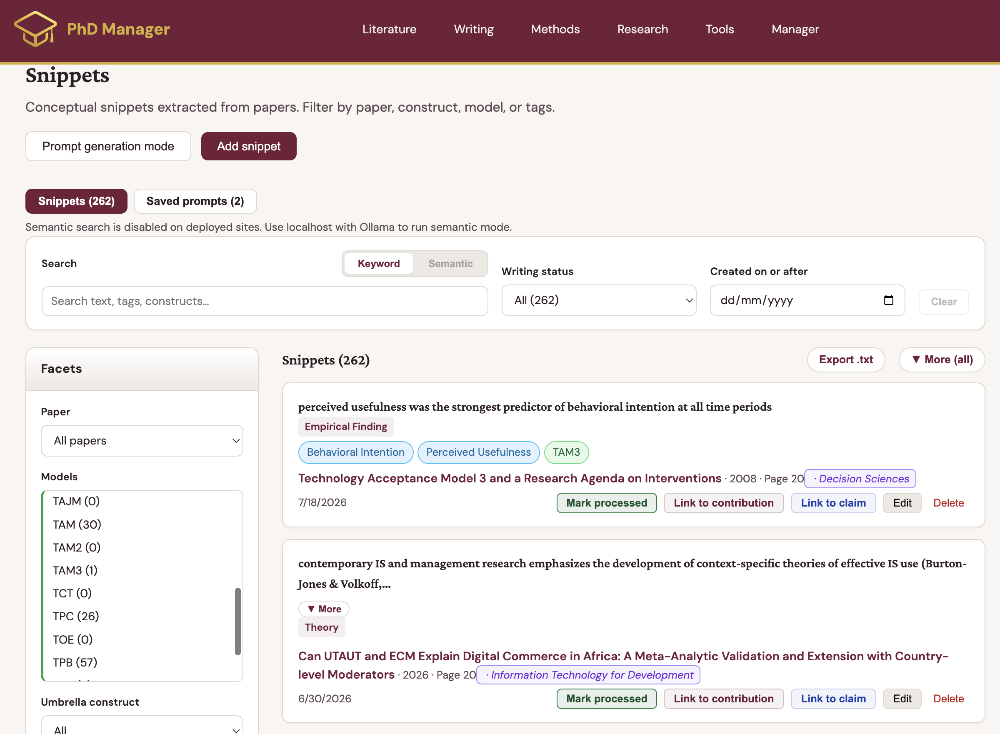
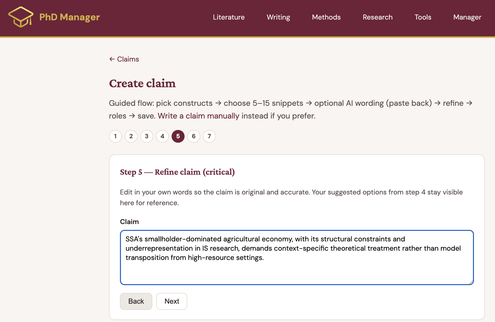
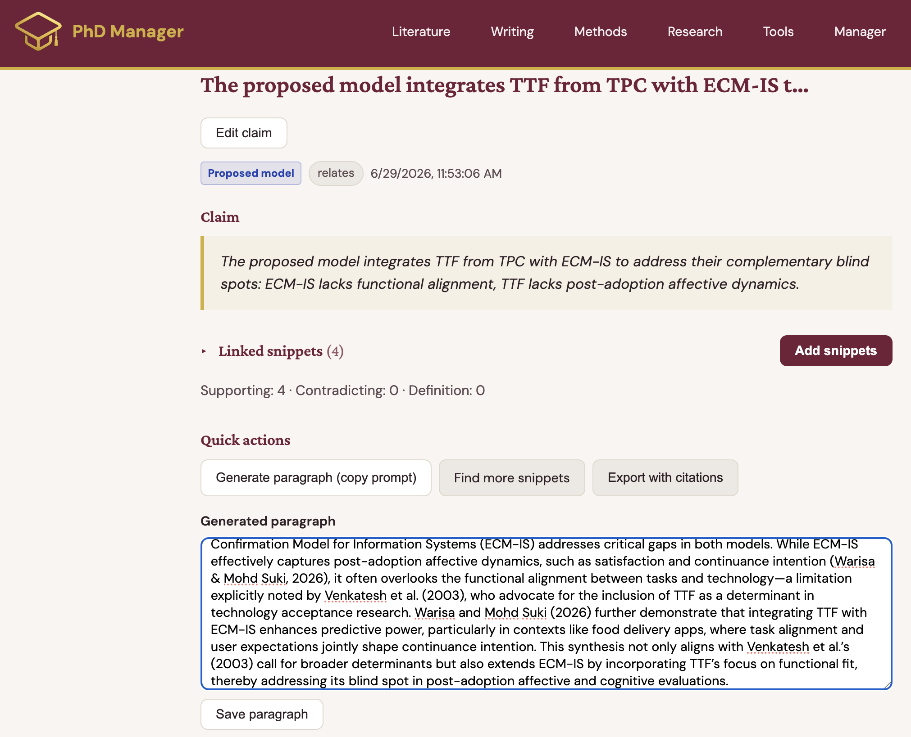
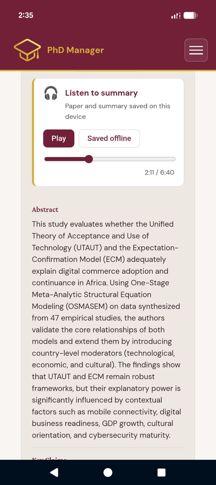
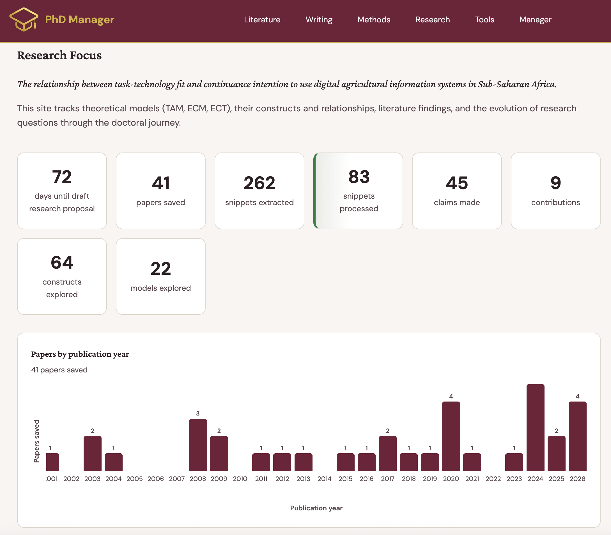

PhD Manager turns every highlight into a structured claim — so your literature review becomes the first draft of your argument, not a pile to revisit.
Piloting now with PhD students and supervisors at Stellenbosch Business School.
One connected loop, from the moment you read a paper to the moment you start writing.
Highlight text anywhere online, right-click "Save Snippet" — it's automatically linked to the paper, model, and construct behind it. If the paper isn't in your repository yet, it's created for you.

Every snippet lands in one searchable library. Filter by paper, construct, model, or type — find the exact quote you need, months later, in seconds.

Connect a handful of snippets into a claim, and your argument starts assembling itself — before you've written a single paragraph.

When it's time to write, you're assembling an argument you've already built, not starting from a blank page.

AI-narrated audio summaries of every paper in your library, saved to your phone. Make progress on your literature review on the commute, the walk, or anywhere you don't have a laptop or a connection.

Not another note-taking app — a structured path from reading to writing.
Save a snippet in three seconds, right where you're reading — no context-switch into a separate reference manager.
Instantly find every piece of evidence tied to a specific construct, months later, instead of re-reading papers to relocate it.
Claims built from your snippets mean your argument exists before you open a blank document.
A visual theory map of your models and constructs helps you spot gaps and overlaps yourself, before your supervisor does.
Tasks, diary, and meeting notes centralized — no more scattered notebooks, emails, and "where did I leave off."
AI-narrated audio summaries of your papers, saved offline — turn commute or dead time into research time.
Models, claims, tasks, and meeting notes live in one shared space — so your supervisor has real visibility into your progress between meetings. Meetings become about decisions, not status updates.
For supervisors
Request early access and we’ll get back to you.
We're piloting institutional partnerships with business schools and universities, starting with Stellenbosch Business School.
Talk to us about your program